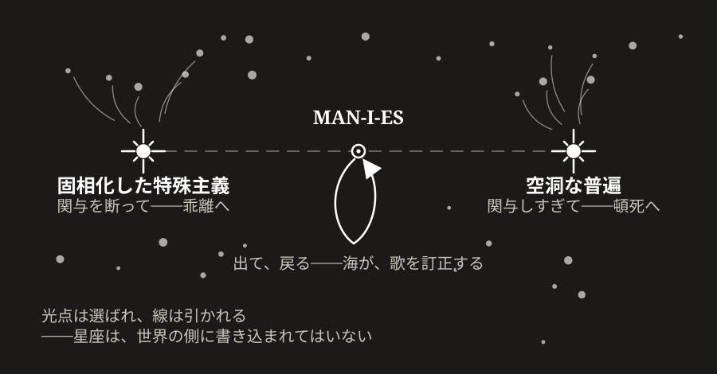

第26章 決して届かない領域、それでも——MAN-I-ESというMANES
自分の言葉さえも信じきれない場所で、何ができるか。
文明の痩せ尾根には、二つの斜面がある——接地条件と、被覆条件（第24章）。第25章は、接地の側に応答した。F に直接触れる営みは「我ら」と分かち合えず、その分かち合えない営みの分布だけが、接地を支える。手の側の応答である。本章は、もう一方の斜面に立つ。理解しえない相手を、なお「我ら」と呼ぶ——その声を運びうる語を、本章は探す。声の側の応答である。
だがその探索は、新しい語を鋳造するところからは始まらない。いま生きている一つの語を、作法どおりに見送ることから、始まる。
§26-1 「多元主義」の Mourning——承認・分離・段階的解体
理解しえない相手を「我ら」のうちに位置づけつづける観念——F 接地の分布を分布として保つ、観念の側の支え——を、既存の語彙はうまく名指せない。「多元主義」「寛容」「共存」——いずれも、互いを理解しうる前提や、共有された価値の前提を含むのだった（「F に直接触れて」第25章）。
だが、この一行で通り過ぎてはならない語が、そこに含まれている。「多元主義」である。この語の下には、二十世紀の破局から立ち上がり、数十年の共存を現に支えた構造が畳み込まれている。それを「もはや使えない」と退け、ただちに新しい語を置くなら、本書は、自ら取り出した帰結をその場で実演することになる。承認と分離を経ない解体は、ラベルと内容を癒着させたまま参照不能領域（LOT）へ押し込み、禍根を残す。
喪の作法を、呼び戻す
ES と結合した構造は、不要化しても、ただ停止させることはできない。第Ⅲ部はこの困難に、Mourning——喪——という機構で応えた。数百ページを隔てたいま、その作法を、要点だけあらためて呼び戻す。本節の仕事が、この作法の遵守そのものだからである。
構造のもとで人々が現に共に生きたとき、構造（ラベル）と共存の経験とは、一つのチャンクに癒着する。癒着したまま構造だけを棄てようとすれば、経験ごと棄てることになる。だから、ES と結合した構造の解体は、三つの段階を踏む（命題 M4、第13章 §13-1）。承認——構造のもとで積み重ねられた共存の経験が「あった」という事実を、内容を変えずに認める操作。判定でも評価でもない。分離の言語化——構造と経験は別物であり、構造を手放しても経験は残るということを、言葉にして前景に置く操作。段階的解体——そのうえで、構造を前景から LEFFLA を経由して参照の外へ、段階を踏んで移す操作。この順序は反転できない。承認と分離を経ない解体は、癒着した全体を一塊のまま落とす——経験も、構造が運ぼうとしていたものも、ラベルと一緒に沈む。そして、経験を承認しないまま遂行される終結は、構造とともに生きた者たちとのあいだに「我ら」と「彼ら」の裂け目を走らせる。逆もまた立つ——承認を経て解体する者は、経験を共有していなくても、それを承認した者として「我ら」に含まれうる。
この作法は、遠いものではない。葬儀が行っているのが、これである。故人が生きたという事実を、評価に先立って認める——弔辞。終わるものと続くものを、言葉にして分ける——別れ。そして一度に消し去るのではなく、期間を置いて、段階を踏んで手放していく——墓標は残り、参照の索引は保たれる。Mourning の名が指しているのは、この同型である。
本節は、この作法を、いま生きている一つのラベルに対して実演する。新語を置くのは、三段を踏み終えたあとである。ただし承認と分離のあいだに、一つの検分を挟む——この語が、どこで、どのように摩耗したのかの見極めである。何が死んでいて何が生きているかを見極めないまま、分離は言語化できない。
あったことを、あったと認める——承認
多元主義は、一つの破局への応答として立てられた。単一の包括的真理を秩序の中軸に据え、その名のもとに組織的な絶滅と総力戦が遂行された二十世紀の経験——そこから、互いに両立しない世界観を奉じる人々が、その違いを理由に殺し合うことなく同じ秩序のうちに共に在りうる、という形式が立ち上がった。それは理念の高貴さから生まれたのではない。世界が——隣人が隣人であり、法が法であり、人が人として扱われるという前提そのものが——壊されていく経験と、それを二度と繰り返させないという痛みの引き受けから、辿り着かれた。痛みが先にあり、語が、あとから来た——多元主義は、痛みが立てた語である。そして以後の数十年、この語のもとで、異なる信仰と信条と生の形が同じ法のもとに隣り合う共存が、現実に生きられた。
その数十年は、制度の名でも理念の名でもなく、名を持たない一日一日として生きられた。互いの世界観が、かつてなら殺し合いの理由たりえた者同士が、同じ車両に乗り合わせ、同じ市場に並び、何も起きずに別れていく。何も起きないことは、達成としては見えない——それが続いているあいだは。
承認は同意ではない。この語がのちに何を取りこぼしたかは、すぐに問われる。だがその前に、これだけを、あったこととして認めておく——この語は痛みから立ち、その下で共存の経験が積み重ねられた。承認とは評価ではなく、あったものを、内容を変えずに認める操作である。摩耗したラベルの喪は、ここから始まるのでなければ、喪にならない。
知識が残り、引き受けが消える——摩耗の検分
痛みが立てた語は、痛みを引き受ける者が生きているあいだだけ、応答である。破局の記憶が生きているあいだ、「多元主義」は応答だった。なぜ単一の真理へ畳んではならないのか、という問いには、説明を要さない切実さが答えていた。答えていたのは、語ではなく、起きたことそのものだった。
やがて、語の支えは、漏斗の段を降りるように移っていく。痛みを経験した者たち（λ₀）から、痛みの経験を直接に継いだ者たち（λ₁）へ。経験者の声がまだ響いているあいだの、声への信頼（λ₂）へ。そして、誰の声でもなくなった知識ストックへの定着（λ₃）へ。段を降りること自体は、衰えではない——文明が何かを世代を越えて運ぶには、この階梯を使うほかない（「参照されるから、存在する」第18章）。病は深さにではなく、閉包にある。段を降りるたびに、語を養う F 由来の入力は細り、最後の経験者が退場したとき、細りは涸れへ変わる。
このとき消えるものを、正確に見ておく必要がある。消えるのは破局の知識ではない——記録は編纂され、教育は反復され、知識はむしろ整備されつづける。消えるのは、知識を一人称で担う痛みの引き受けである。知識が残り、引き受けが消える。この非対称のもとで、語は、情報としては完全に保存されたまま、応答としては空になる。空になる、とは、F から剥がれる、ということである。この語が名指していた共存は、もともと語の中にはない。理解しえない隣人と、そのことを理由に殺し合わずに過ぎていく一日一日——語は、その F の傍らで発火する索引だった。担い手が退場した語は、F から浮き上がり、参照だけが自走する。応答であることをやめた語は、一つの立場の名となる。賛成と反対の対象として、SFOK のスロット（「ああ、あの立場のことか」と参照を済ませる軽量な索引）へ同化する。スロットへ同化したラベルは、背後にどれだけの構造を抱えていても、参照の瞬間にはラベルとしてのみ発火する。これが λ₄ の姿である——語は SFOK参照系に立場の名として登記され、参照はもう F を経由しない。
応答から、立場へ——摩耗が語に対して行う変質は、これである。応答であるあいだ、語が向き合っていた相手は、起きた現実だった。立場となった語が向き合う相手は、他の立場である。向き合う相手が、現実から、語に替わる。以後、この語をめぐる争いは、現実をめぐる争いではなく、立場と立場の争いになる。
この痩せ方は、第23章 §23-1 が起動条件の四層として数えたものの、意味の層のそれである。知識の起動条件——λ₃ のストック——は整備されつづけたまま、意味の起動条件だけが涸れていく。意味の起動条件とは、λ₁・λ₂ の連なりが、世代を越えて生きた装置として作動していることである。摩耗とは、意味の起動条件の消尽が、一つの語の上で観察された姿である。
この摩耗は、不運ではない。多元主義は、一つの正しい直観を持っていた。複数の両立しない座標系を、どれか一つへ強制的に畳んではならない、という直観である。なぜ、畳んではならないのか——かつてこの問いには、起きたことが答えていた。F が答えなくなったとき、語は、自分の言葉だけで答えるほかなくなった。返せる答えは、二つしかなかった。
一つは、「多様性は善いことだから」。規範の答えである。F の入力が涸れた規範は、規範自身を養い始める——多元主義のための多元主義。自系の言葉を自系の根拠として回るこの形を、本書は自己言及相と呼んできた（第9章・第18章）。そして規範は、それ自体が一つの立場である。立場は別の立場と対置され、賛否のスロットへ縮約される——先に見た同化が、ここから始まる。
もう一つは、「畳むべき正しいものなど、そもそも無いのだから」。真理の否定による答えである。この答えは、より深いところで語を損なう。畳み込みを拒む論理は、止めどころを与えられなければ、どこで止まるかを自分では知らない。優先されるべき一つの座標系は無い、から、正しさを主張しうる座標系は無い、へ。やがて、何かを縛る根拠そのものが、無い、へ。拒否の論理は滑りつづけ、最後には、自分が守ろうとしていた条件の足場まで解く。そしてこの答えは、守られるべき条件（畳んではならない）を、真理の否定（真理は無い）と一つに溶接してもいる。以後、虚無を斥けようとする動きは、守るべき条件ごと引き剥がす形でしか動けない。
滑落を止めるものは、論理の内側には無い。語が現実への応答であったあいだは、現に生きられている共存が、解体の抵抗になる。畳まれていない一日一日が、そこに在るからである。語が語とだけ向き合うようになったとき、この摩擦は消える。そして、二つの答えのどちらも、生きる根拠の側では、人を素手のまま残す。厚い単一の真理は、所属と意味と動員を与える。素手と厚みでは、情緒の秤の上で、勝負にならない。
多元主義は、機構を求める規範であった。第三の答え——畳めば何が起きるのか、なぜ畳めないのかの機構——を、それは持たないまま立ちつづけた。摩耗は偶然の不運ではなく、この欠落の帰結である。
語と一緒に棄てられるものを、分ける——分離の言語化
ここで、分離を言語化する。「多元主義」という語のもとには、三つのものが一つに癒着している。第一に、ラベル——賛否の対象となった立場の名。第二に、共存の経験——この語のもとで数十年にわたり現実に生きられた共存。それはラベルが失効しても消えていない。人々の生と制度のうちに、あったものとして残っている。第三に、構造条件——この語が運ぼうとして、機構を欠いたために運びきれなかったもの。複数の両立しない座標系を一つへ畳んではならない、という要請そのものである。「多元主義の時代は終わった」という感覚の痛みは、この三つが一つのチャンクに癒着しているために、ラベルの失効が経験と条件の喪失として経験される信号である。分離すれば、こう言える——ラベルは手放しうる。経験は消えていない。条件は手放せない。
ただし、「手放せない」の内実を取り違えてはならない。条件を概念として保持すること——複数座標系の共存という命題を、知識の棚に正しく置きなおすこと——は、まだ保持ではない。それでは、摩耗が「多元主義」に対して行ったことが、語だけ替えて反復される。知識が残り、引き受けが立たないまま、F から浮いた参照がもう一巡する。条件が保持されるとは、F で引き受け直されることである。この条件が指す共存は、根のところでは概念ではなく F にある——自分の座標系では読みきれない隣人の傍らに、畳もうとせずに在りつづける、個々の営みとして。そして、F との直接接地は人それぞれに異なり、「我ら」と分かち合えない孤独な営みである。その営みが分布する形でしか、係留FOE のうえの接地条件は質的に成立しないのだった（中核命題-6、第25章 §25-3）。条件の引き受け直しも、この分布の構造を継ぐ。本書が、制度が、正しい定義が、代行して一括で済ませることはできない。各々の一人称が、各々の F の傍らで、引き受け直すほかない。機構の導出は、この引き受け直しを免除しない。なぜ畳めないかを知ることと、畳まないままに隣に在ることとは、別の水準にある。
分離を経ない解体が何を残すか。禍根と分断である。ラベルの棄却が「多様性という建前の時代の終わり」として遂行されるとき、その下の構造条件までが一緒に LOT へ落ちる。承認なき終結は、多元主義を大切なものとして守りつづける者たちと過去のものとして解体しようとする者たちとのあいだに、相互に「我ら」と「彼ら」の分断を生成する（命題 M6、第13章 §13-2）——この帰結がどのような配置をなすかは、失敗の星座として §26-5 で描く。
索引を保って、退ける——段階的解体
そのうえで、段階的解体である。本書は「多元主義」というラベルを、LEFFLA へ退ける——索引を保ったまま。この語が何であったか、どの痛みに応えたか、なぜ摩耗したか。この索引が保たれているかぎり、語は参照不能に落ちたのではなく、判断を待つ位置に退いたのである。反対のラベルへの置換ではない。別の単一ラベルへの即時の置換でもない——それは同じ摩耗を、語だけ替えて反復する。本章の後段で新語を置くのは、承認・分離・解体の三段を踏み終え、運ばれるべき条件が機構として立ったあとであり、それは置換ではなく継ぎ直しである。
なお、一冊の本にできるのは、自らの記述の内部で承認・分離・解体の三段を踏むことまでである。喪の第一段——承認——が認めるのは、生きられた共存であり、生きられたものは F の側にある。F に触れる位置は、一冊の本にはない。文明の規模での喪は、この語とともに生きてきた無数の一人称の、それぞれの F の傍らでの引き受け直しと、そのあいだの対話として、本書の外で続く。本書が先取りできるのは作法であって、遂行ではない。
喪が向かう終着を、本書はすでに知っている。Mourning が達成されるとき、ES は特定の構造との同一化から、「『我ら』はどのように共存するか」という問いそのものへ回帰する（第13章）。ラベルが退いたいま、この問いが裸で立つ。理解しえないままに「我ら」と数える観念は要請されている——しかし、それを支えるはずだった既存の語は、もう前景にない。継ぐべき構造条件は、まだ方向としてしか言えていない——畳んではならない、と。なぜ畳めないのか。畳まないことが、何を、どのように起動するのか。この問いの機構的な答えへ向かう前に、なぜこの問いがいま初めてこの密度で立つのかを、圧力の側から見ておく必要がある。
§26-2 いま働く縮退圧力——単一実装への引力
「多元主義」は後景に下がった。だが後景に下がったのはラベルであって、ラベルを摩耗させた機構ではない。語の支えが λ の段を降り、F 由来の入力が涸れて、応答が立場の名へ変質する。この過程を、本書は摩耗機構と呼ぶ。摩耗機構は、「多元主義」に一度きり働いた特殊な力ではない。同じ機構は、被覆条件を担いうる他候補ラベルにも、同じ論理で作動する。寛容・共存・多文化主義・手続き主義。いずれも、担い手の世代交代のたびに、応答から立場へ、立場から SFOK スロットへと、同じ経路をたどる引力にさらされつづけている。個別のラベルを一つずつ退けていっても、退けたラベルは尽きない。後から次々に、同じ位置に別のラベルが立ち、同じ機構に呑まれていく。
そのうえで、いまこの摩耗機構の背後には、被覆条件そのものに働く、より深い一つの力がある。単一実装への統合誘因である。
統合誘因——帯域制限の裏返し
有限の帯域のもとで、複数の座標系・複数の報酬関数を並行して保つコストは大きい。互いの差異を表象し、突き合わせ、調停する労力は、系の規模とともに指数的に膨れ上がる。この帯域律速のもとでは、単一の座標系・単一の報酬関数へ畳もうとする誘因が、恒常的に働く。単一化は、帯域を節約する。実装が一つに揃えば、相互表象は不要になり、突き合わせも消える。
この誘因は、規範や好悪の水準にあるのではない。帯域制限そのものの裏返しである。多元性を保つ実装が高くつく——この構造的事実の反射として、単一化への引力は絶えず作動する。多元性が「面倒である」という感情はここに接地する。感情の側から見れば、それは怠惰とも、決断力とも、明晰さとも呼ばれる。しかし機構の側から見れば、いずれも同じ一つの引力の別々の表情である。
摩耗機構と統合誘因は、別々の力ではない。SFOK スロット化は、多面的な構造を単一のラベルへ縮約する機構であり、統合誘因が実装の側で作動するのと同じ帯域律速が、参照の側で作動している姿である。摩耗はラベルの水準の単一化であり、統合は実装の水準の単一化である——同じ力の二つの現れとして、両者は互いを補強する。
「外」の消尽——三方向の逃げ場の閉塞
この統合誘因が、いま、歴史上のいずれの秩序も経験しなかった密度で働く。理由は、三方向の外——空間・時間・実存の逃げ場——が消尽していることにある。
歴史上の秩序は、被覆条件を、外部を持つ共存として成立させてきた。ある宮廷の書記たちが薄い錨でつながっても、その錨に触れない民衆の世界は残されていた。ある信仰共同体が別の信仰と共存しても、境界を越えない未編入の周縁が残されていた。空間の外は、共存の負荷を吸収した。時間の外は——先送りできる未来として——即座の応報を延期した。実存の外は——係留主体の外部としての世界——係留の負荷を分担した。単一化の引力は、外へ吐き出される負荷によって、常に緩められていた。単一化しきれない部分は、外へ落とせばよかった。
いま、その外が三方向で消尽している。空間の外——他文明が並走する外部——は、被覆領域の相互編入によって痩せている（「空間的不安定」第20章）。時間の外——未来世代の作動という転嫁先——は、前借りの構造によって侵食されている（「時間的不安定」第21章）。実存の外——係留の外側にあるはずの領域——は、係留主体そのものが操作可能対象化されるにつれて内側から侵食されている（「実存的不安定」第22章）。三方向の外が消尽するにつれて、単一化の引力は、吐き出せない負荷として内側に累積する。
外があるかぎり、部分参加の共存で足りた。単一化しきれない部分を外へ落とし、残った内側だけを共存の対象とすればよかった。外が痩せたいま、単一化しきれない部分は落ちる先を失う。落ちない部分は、内側で、単一化の引力と直接対峙する——被覆条件は、その対峙の場として、いま初めて裸で立つ。
いま被覆条件が問われる密度——三つの力の交差
この三つの力は、被覆条件の水準で、いま初めて一つの密度で交差している。SFOK スロット化の摩耗機構と、単一化への統合誘因、そして三方向の外の消尽である。歴史上の秩序が単一化に耐えたとすれば、それは外への吐き出しに支えられていた。外が痩せたいま、単一実装への引力は、被覆条件の担い手たちの内側で、直接、機構と対峙するしかない。
この対峙のもとで、被覆条件はどう成立しうるか——という問いが、はじめて裸で立つ。
§26-3 なぜ畳めないのか——被覆条件の機構
ラベルは退いた。圧力は集約された。問いが、裸のまま残っている——複数の両立しない座標系は、なぜ一つへ畳めないのか。畳まないことは、何を、どのように起動するのか。本節は、この問いを機構の側から立ち上げる——多元主義が持たないまま立ちつづけた、第三の答えの位置である。以下で「多元主義」の語を用いるのは、LEFFLA に退けた語の、索引としての参照である。指すのは立場ではなく、この語が運びきれなかった構造条件そのものである。
ただし、問いの立て方を、先に正確にしておく。一つへ畳むことを、宇宙は妨げない。単一の座標系に貫かれて立つ秩序も、畳んだまま尽きる秩序も、宇宙論的な中立のもとでは等価である（序論 §4）。「畳めない」は、無条件の法則ではない。それが立つのは、本書のバインド——百億人の「我ら」へ、千年後の「我ら」へ——から測ったときである。そして、一つへ畳む道は、一本ではない。互いの座標系を表象し合い、調停を重ねて一つへ収束していく——合意の道。表象も調停も経ずに、一つの正統を立て、その語彙で復号できないものを切り落とす——強制の道。この二つの道を、百億と千年が、一つずつ塞ぐ。その塞がりは、理念としてではなく、バインドの内側の必然として捉え直したときに、見えてくる。
合意の道——量の壁と百億
『どこまでが「我ら」か』（第24章 §24-2）で、本書はすでにその導出の前段を置いていた。係留FOE を保つ二つの構造条件——被覆条件と接地条件——を、有限の帯域のもとで満たそうとすると、実装はつねに近似的なものにとどまり、宿命的に LOT を副生する。完全な実装は、単一でも複数でも、存在しない。だが、ここで問われているのは完全性ではない。単一性である——近似でよいなら、一つの近似実装へ皆で収束することは、できないのか。
合意によるその収束は、百億の構成員が、各々の座標系と報酬関数を互いに表象し、突き合わせ、調停することを要求する。突き合わせるべき差異の数は、構成員の数とともに急速に膨れ上がる——二者のあいだの対で数の二乗に、三者以上の整合ではそれを超えて。この膨れ方そのものは、規模を選ばない機構である。それが壁として立つかどうかを決めるのが、規模である。慣性が「我ら」を閉じる小さな系では、座標系は表象をほとんど要さずに重なり合う。一つへ畳まれた共存は、そこでは現に生きられてきた（『「我ら」を引き受けるとは何か』第23章 §23-3）。百億は、そうではない。有限の帯域は、この調停を払いきれない。
前節で見た統合誘因は、この量の壁に突き当たって、しかしゼロにはならない。誘因が指し示しているのは、揃い終えたあとの節約——相互表象が不要になった定常——であり、壁が立つのは、揃えるまでの過程だからである。着地点だけを照らして道のりを照らさない誘因は、壁によって消えるのではなく、二つに割れる。一つは、達成不能な標的へ向かいつづけ、単一化しようとして届かない被覆の断片を残す。もう一つは、壁のない側へ流れる——次の道である。
強制の道——動く地形と千年
合意を経ない道は、残っている。表象も調停も要らない。一つの正統を立て、共有される錨をその読みへと確定し、正統の語彙で復号できない仕様を、選別の外へ落とせばよい。LEFFLA を経ない即時確定——LOT direct（第3章 §3-7）——の、共存条件のスケールでの姿である。量の壁は、この道を塞がない。切り落とすことは、突き合わせることより、つねに安い。
この道の代価は、別の場所に立っている。共有される錨は、未確定のまま LEFFLA に保たれているかぎりで、多座標系への投射可能性を保つ。各々が自分の座標系で読み直せる余地が、未確定性のうちに畳まれている。錨を一つの読みへ確定することは、その余地を消す操作である。LEFFLA が三つの層でフラクタルに現れること（第24章 §24-2）の、系の層の姿——ES の液相を支える未確定の余地——が、これである。確定は、それを使い尽くす。確定した直後には、何も起こらない。むしろ身軽にさえ見える——調停は消え、参照は速くなり、系は揃って動く。不在が現れるのは、地形が動いたときである。動いた先を読み直す軸は、しばしば、切り落とされた側にあった。正統の語彙は、彫られたときの地形へ向いたまま残る。
そして、千年は、地形が一度も動かないことを当てにしてよい長さではない。畳まれた秩序は、畳んだ時点では保てているように見える。保てなくなる時点は、確定の内側からは見えない。組み直しの手がかりの不在は、手がかりが要るまさにそのときにしか、現れないからである。合意の道を塞ぐのが規模だとすれば、強制の道を塞ぐのは、時間である。
この道には、もう一つの形がある。切り落とした者たちを勘定から外し、正統の内側だけで勘定を合わせる形——遮蔽充足（第24章 §24-4）である。その「我ら」は、もう百億ではない。百億が合意の道を塞ぎ、千年が強制の道を塞ぎ、勘定から外す形は宣言そのものが最初に閉じている。名が置かれた場所（第24章 §24-5）の三つの閉じと、同じ形である。
真理の層と、共存の層
この二つの塞がりが、真理の有無という問いに依存していないことは、銘記されてよい。合意の道は、有限の帯域が相互表象を払いきれないことで塞がり、強制の道は、確定が組み直しの余地を消すことで塞がる。どちらの塞がりにも、真理は呼ばれていない。第三の答えは、「善いから」にも「真理が無いから」にも寄りかからない。条件は、懐疑からではなく、構造から立つ。
そのうえで、本書はここで、避けてきた語を一つ、定義して置く。本書が真理と呼ぶのは、私たちの宇宙の最基底層の不変量の構造と、それを写して、係留する MANES に依存せずに共有されうる内容の層である。すなわち、どの選別構造のもとでも同じ形で立ち、いかなる文明の操作によっても書き換えられないものを指す。この層の実在に、証拠はすでに挙げてある。「2 + 3 = 5」は、いかなる MANES のもとでも成り立ち、改宗も調停も経ずに文明を跨いで共有されてきた（「数学の巨大な視界と盲点」第4章）。そして、いま塞がれた二つの道が、この層の判別器になる。この層の内容は、相互表象の量の壁に課税されない——渡るのに調停が要らない。確定しても余地を要さない——地形が動いたときの訂正が、調停ではなく F の返り——測定——として届く。真理とは、二つの道を塞いだ壁と地形が、どちらも課税しない内容の層の名である。
だから、第三の答えは、棚上げではなく決着として言える。畳んではならないのは、真理が無いからではない。真理は在る——そして、共存条件は、その層に属さない。座標系・報酬関数・ES は、F が仲裁しない層に立つ。そこで一つの読みへ確定すれば、復号できないものが切り落とされ、読み直しの余地が消える。「一つの真理へ畳む」という長い歴史を持つ道が躓いてきたのは、真理を信じたからではない。真理の層の運搬特性——調停なしに渡り、余地なしに保つ——を、その層に属さない内容へ主張したからである。長く保たれた秩序が、実は畳みきっていなかったこと——滲みと解釈の余地を保ったまま運んだこと（「神話的MANES」第8章）——は、同じ線引きの、裏からの証拠である。
なお、この定義は「私たちの宇宙」の内側で立つ。最基底層のさらに外——この宇宙を超える真理の有無——について、本書は何も述べない。それは、記述の外に属する。
このことが、摩耗の検分で見た溶接を解く。機構を欠いていたあいだ、「畳んではならない」という条件は、「畳むべき真理など、そもそも無い」という答えに溶接されて立つほかなかった。だから、虚無を斥けようとする動きは、守るべき条件ごと引き剥がす形でしか動けなかった。機構が立ったいま、条件は、真理の否定とは別の足場の上に立つ——真理は、否定されずに、別の層に残る。真理をめぐる争いがどちらへ転んでも、有限の帯域は有限のままであり、動く地形は動きつづける。虚無を斥ける動きは、もう、条件ごと引き剥がす形を取らなくてよい。
同時に、この条件は、定言の法則でもない。百億と千年を引き受けるならば——この仮言の内側で、二つの道は塞がる（規模の自覚が仮言的要求であったのと、同じ形である。第24章 §24-4）。バインドを引き受けない位置では、二つの道は開いたままであり、畳んで立つ秩序を、宇宙は等価に受け入れる。畳んだ秩序がどの配置へ行き着くかは、本書のバインドから測る名とともに、失敗の星座（§26-5）が描く。
断念が共存を起動する——ただし維持ではない
二つの道が塞がれたあとに残るのは、畳まないままの共存である。有限帯域のもとでその共存が起動しうるのは、相互表象を断念するかぎりにおいてである。共有されるのは、仕様の重なり——低い解像度の一つの錨——だけであり、各々はそれを自分の既存の座標系で局所的に読む。固有の領域は、互いに表象されぬまま私的に保たれる。異質性を残すことが安い側であり、均質化——全仕様の調停——こそが高くつく側に立つ。これが、複数の近似実装が液相的に共存するということの、内実である。「多様性は善い」という規範が掴みそこねていた機構は、ここにある。多元主義が安いのは、互いを残らず理解し合おうとしないからである。
ただし、この断念が支えるのは共存の起動であって、その維持ではない。薄い接続は、黙って分岐し、痩せていく。維持には、F への接地し直しと、古い実装を解体する作法（Mourning）と、係留FOE のうえでは構成員レベルの自覚的な引き受けとが要り、いずれも帯域に律速されて高くつく。安く起動するとは、相互の調停のコストを払い消すことではなく、未来へ繰り延べることである。繰り延べられた請求は、薄い接続が現実から剥がれていく過程——接地条件の破れ、乖離（第24章 §24-2）——として回収される。これは前借り（第21章）と同じ構造を、共存の実装のスケールで反復する。
一つの場面を置く。古代の地中海から大洋へ出た商人たちについて、ある史家が書き残している。彼らは知らない土地の岸に着くと、積み荷を浜に並べ、船へ引き上げて、煙を上げた。煙を見た土地の者たちが浜へ降り、荷の傍らに金を置いて、退く。商人たちは戻って金を検分し、釣り合うと思えば金を取って去り、足りないと思えば、何にも手を触れずに、また船で待つ。土地の者は金を足す。そうして、言葉を一度も交わさず、顔を一度も合わせず、交易は成り立った。史家がとくに書き留めたのは、次の一点である——どちらの側も、相手のものに先へ手を触れない。
ここに、いま導いた機構が、ほとんど裸の形で見える。二つの民は、互いの言葉も、神々も、値付けの体系も、何一つ表象し合っていない。共有されているのは、低い解像度の一つの錨——荷を置き、退き、合図し、釣り合うまで待つという仕様の重なり——だけである。各々はその釣り合いを、自分の座標系で読んでいる。相手にとって金が何であり、荷が何であるかを、どちらも知らないままである。それで共存は、現に起動している。煙は、何も語らない。ただ、こちらに居る、とだけ告げる。そして、この薄い形式には、強制する装置がない。どちらかが一度、先に手を触れれば、それきり壊れる。維持は、制度が肩代わりしてくれるのではない。会うことのない相手に向けた双方の自制として、毎回、払い直されている。断念が起動させた共存は、この払いつづけの上にしか、続かない。
選べないまま、全方向へ——そして ES の液相
そして、この重なりは、被覆を完成させはしない。操作能力はたえず外へ伸び、新たに操作の及ぶ領域を生みつづける。「実存的我ら」（E）がそれを引き受け直す速さは、その生成に追いつくとは限らない。だから「我ら」の被覆（E の被覆。O ≤ E）は、複数の実装をいくら重ねても、漸近するばかりで、閉じる保証はない。引き受けられないまま落ちる残余——LOT の副生——は、減らせても、尽きるとは限らない。多元主義が運ぼうとしたのは、被覆を完成させる解ではなく、閉じない隔たりを引き受けつづける営みである。さらに、共有される錨は、未確定のまま LEFFLA に保たれつづけねばならない。一つの読みへ確定すれば何が消えるかは、強制の道を塞いだ当のものとして、すでに立っている。
ここに、一つの過酷さがある。覆われぬまま残るもののうち、操作がまだ及んでいない生の流動（F--）は、それ自体としては害が薄い。まだ操作が及ばない以上、そこに業も盲点もない。引き受け直すべきは、操作が及びながら引き受けられていない業（-O-）のほうである。だとすれば、業だけを選んで被覆し、害の薄い流動は措いておけばよい——そう考えたくなる。だが、それはできない。「実存的我ら」（E）は、自らの外側を見分けられない（命題 FOE-8、第16章 §16-6）。働きかける前に、こちらは引き受けるべき業、あちらは措いてよい流動、と仕分ける分解能を、そもそも持たない。見分けがつかないがゆえに、業を取りこぼさないためには、害の薄い流動をも、ともに被覆しにいくしかない。結局、全方向へ運動するほかない。
この選べなさこそが、労働を重くする。「操作能力的我ら」（O）の論理は、つねに囁く——「要るものだけを選んで覆えばよい、その選択は可能だ」と。だがその選択的な被覆は、「実存的我ら」（E）の側には開かれていない。操作の論理には、「操作能力的我ら」の報酬関数で定義されているものしか含まれていないからだ。囁きに従って業だけを狙えば、見分けのつかなかった業を取りこぼして盲点をつくり（頓死へ）、あるいは覆ったふりをして名目だけ普遍を広げる（§26-5 空洞な普遍へ）。選べないまま全方向の労働を負うこと。その労働の多くが、操作の目から見れば「要らなかった」被覆であること。ここに、引き受けの苦悩の根源がある。
この構造を、本書はすでに ES の液相という像で予告していた。複数の MANES が、固相的に一つへ凝集するのでも、気相的に散逸するのでもなく、液相的に共存すること——互いに異なる近似実装が、流動しながら相互に補完し合う状態——が、系の存続条件である。普遍的な参加（係留FOE に乗る「我ら」のすべてが関与すること）と、実装の多様性（単一へ凝集しないこと）とは、一見矛盾する。液相的な共存は、この矛盾を解く唯一の形式である。
機構は立った。しかし機構は、まだ語ではない。この機構を担う語をどう名指すか——ここで初めて、名指し直しの問いが応答を要求する。
§26-4 MAN-I-ES と歴史的先例なき課題——相互理解不能者間の「我ら」観念
三段は踏み終えられた。承認は保たれ、分離は言語化され、旧い語は索引を保って LEFFLA に退いている。機構も、前節で立った。
既存の「多元主義」が摩耗したのは、それが単一のラベルとして SFOK スロットへ登記され、背後の構造を運べなくなったからだった。前節で立てた被覆条件の機構は、既存のラベルでは運びきれない。二つの畳む道の塞がり、断念による起動、払いつづけの維持、選べなさである。この機構を担う語は、単一ラベルへの再圧縮に、構造的に抵抗するように作られていなければならない。
だから、ここで置く新語は置換ではない。退いた語が運ぼうとして運びきれなかった条件を、新しい足場の上で継ぐ、継ぎ直しである。この、構造的に導出された共存の形態を、本書は新しい語で名指す——MAN-I-ES である。
MAN-I-ES は、この抵抗を語形そのものとして備える。ただし、この語の作りは、複数の仕掛けの等価な並列ではない。一つの一次層をめぐって、四つの共鳴層が鳴る。中心に一人称が立ち、残りの四つがその周りで響く、という非対称の構造である。MAN も ES も、ここまで見てきた意味（人間相の担い手／共存条件）を一次の読みとして保ったまま、その綴りが下に別の読みを響かせる。
一次層——I、引き受け直しの座
中心に置かれているのは I——英語の一人称「I」である。MAN（人間）と ES（共存条件）のあいだに「I」が立つ。ここまでに見た一人称の引き受け——自分の Hineni をして立つ位置——を、語の中心に常設する仕掛けである。共存は、抽象的な全体としてではなく、引き受ける一人称を経てはじめて成立する。
なぜ一人称が中心なのか。§26-1 の末尾が、すでに答えている——継ぐべき条件は、概念としては保持されない。各々の一人称が、各々の F の傍らで引き受け直すほかない。I は、その引き受け直しの座を、語の中心に刻む。そしてここには、摩耗した「多元主義」が埋められなかった空隙への、応答の形も畳まれている。多元主義は、枠それ自体からは生きるに足る意味の錨を出せないという空隙を抱えていた。生きる根拠の側では、人を素手のまま残した。その素手の座が「畳むべき真理など、そもそも無い」という答えで埋められたとき、条件は虚無と溶接された（§26-1）。MAN-I-ES は、この空隙を枠の水準で埋めることを、最初からしない。錨は、枠が一括して供給するものではなく、各々の近似実装の内側で生きられるものである。それを最終的につなぎ止めるのは、保証された真理ではなく、引き受ける一人称である。だから、語の中心の I は、引き受けが立つ場所の指定であって、立てという命令ではない。立つかどうかを、語は決められない。I は、読者が語に入る入口として、開いたまま置かれている。読者各自の引き受けによって I は具体化し、複数の I が重なって、次に見る manies の意味へ接続する。
四つの共鳴層——manies・es・Ich-Es・ハイフン
第一の共鳴層は、manies——「many（多数）」に複数語尾「-s」を付した、英文法を逸脱した形である。複数の近似実装の液相的共存——多数の、さらにその多数——を、あえて違和感のある語形で表記に込める。この違和感そのものが、既成のラベル「多元主義」が滑り込んだ SFOK スロットへの同化を、文法のレベルで拒む。
第二の共鳴層。MAN-I-ES を「MAN（人間）-I（私）-ES」と読むとき、末尾の ES は独語の「es（それ）」を響かせる。これによって、人間ではない知性——無垢の知性を含む——への含意が畳み込まれる。
第三の共鳴層。その「es」は、ブーバーの「我-それ（Ich-Es）」を想起させる。「我-汝（Ich-Du）」の関係を、理解しえないすべての他者と結ぶことは、相互表象の量の壁（§26-3）が許さない。共存の現実の大半は、「我-それ」の側で営まれるほかない。MAN-I-ES があえて「我-それ」を響かせるのは、この現実を語の外へ隠さないためである。そのうえで、「我-汝」を志向しつづけないかぎり、関係はたやすく「我-それ」——相手を道具として扱う関係——へ滑落するという緊張を、語そのものに刻む。
第四の共鳴層は、これらをつなぐハイフン「-」 である。MAN も I も ES も、個々の項としてではなく、それらをつなぐ関係性「-」においてはじめて意味を持つ。関係こそが構造である、という本書の姿勢の、表記への直接の刻印である。同時にハイフンは、manies の非標準形とともに、読みの単位で分節を強制する。一息で発火する単一トークンへの圧縮——ラベル化、SFOK スロットでの参照——を、語の形が機械的に妨げる。
読みにも、同じ姿勢が現れる。この語は、読み方ごとに別の層を鳴らす。ハイフンに従って分節し、「マン・アイ・エス」と読めば、中心の I が音のうえでも立つ。ハイフンの落ちた綴り manies を英語として読めば、「メイニーズ」——多数が前に出る。だから本書は、読みを一つに定めない。定めれば、単一へ畳まれない共存を名指す語の、その読みだけが単一に畳まれることになる。ただし、分節は、使い込むほど磨り減っていく。ひと続きの「マニエス」へ滑らかになり、摩耗の果てでは I の音が呑まれて、残る音はただの MANES へ近づいていく。この摩耗は、読みを定めても防げない。分節して読み直すたびに、I は立ち直る。読みは、その往復ごと携えられるように、開いたままにしておく。
一次層が引き受け直しの座を常設し、四つの共鳴層が、液相的共存と、非人間知性への開けと、道具化への緊張と、関係の構造とを鳴らす。なぜこの形でしかありえないかを問うには、この語がどの位置に置かれているかを見なければならない。歴史のどこに、この形態の先例はあるのか——ないのか。ある形での連続性と、ない形での非連続性が、同時に立っているはずである。
歴史的先例との連続——薄い重なりで生きられた共存
本書はここまでに、循環耐久相の成立条件をいくつも積み上げてきた——HZ の内側にとどまること、ラムダ帯域の深さまでの被覆、動的安定化の三条件、コストの内側化、Mourning を備えた解体、再編成余地の保持、対称性志向の維持、そして構成員レベルの第三段の自覚。MAN-I-ES とは、これらの条件をすべて満たす MANES のクラスにほかならない。
このうち最後の条件——構成員レベルの第三段の自覚——が、どちらに乗るかに依存して地位を変える。第23章で見たとおり、錨泊FOE の地にとどまる規模では、伝統・儀礼・血縁・地縁の慣性がこの自覚を代行し、構成員が無自覚でも成立しうる。村落共同体や修道院は、その意味で MAN-I-ES の歴史的な先例である。だが係留FOE に乗る規模では、慣性が効かず、第三段の自覚が他の条件の前提へと格上げされる。
ここに、歴史的先例との連続性と非連続性が、同時に立つ。連続性は、錨泊FOE の地に限られない。係留FOE のうえにも、複数の両立しない座標系が、薄い共有層の重なりだけでつながれて共存した秩序は、繰り返し存在した。異なる信仰を奉じる主権者たちの並存も、本章が §26-1 で喪に付した戦後の多元主義秩序も、その系譜にある。満たすべき条件の多くを、これらの秩序は現に満たし、共存は生きられた。本書は、それを先例の不在によって帳消しにしない——§26-1 の承認は、ここでも保持される。
もう一つ、場面を置く。三千数百年前、大河のほとりの王宮に、隊商が粘土板を運んでくる。焼かれた土の板に、その宮廷の誰も日常には話さない言葉が、楔形の文字で刻まれている。板は決まって、同じ形で始まる——わが兄弟に、語れ。あなたの家に、妻たちに、息子たちに、馬に、戦車に、すべてよかれ、と。冒頭の「語れ」は、王への言葉ではない。板を声に戻す者への、指図である。書き手と読み手は、王と王である。互いの顔を見たことがなく、言葉を話せず、生涯会うこともない。それでも板は「わが兄弟」と呼びかけ、返す板も「わが兄弟」と呼び返した。残された書簡は、苦情で満ちている。約束の黄金が、炉にかけると目方が足りない。先王はもっと多くを送ってきた。使者をなぜ何年も留め置くのか。それでも、次の板もまた、わが兄弟、と始まった。砂漠を数か月かけて往復する隊商が、この定型と贈り物とを、途切れさせずに運びつづけた。
これは、薄い重なりだけでつながれた共存の、書面に残る最も古い姿の一つである。二つの宮廷は、互いの神々も、「兄弟」という語で相手が何を含意しているかさえ、表象し合っていない。現に一方はこの語を対等の血族の契りとして読み、輿入れと贈与の対等の往復を求めつづけ、他方は同じ語を、中心が周縁へ許す礼譲として読み、自分の娘を決して外へは出さなかった。同じ錨を、二つの座標系が別々に読んだまま、大国のあいだの平和は現に起動し、世代を越えて保たれた——先例は、確かに在る。だが、同じ発掘の山には、もう一種類の板のほうが、はるかに多く埋まっていた。周縁の小さな都市の主たちからの板である。その定型は、兄弟ではない——わが主、わが太陽の足元に、七たびと七たび、ひれ伏します。兄弟の定型は、少数の対等者のあいだにだけ張られ、その足元には、ひれ伏す者たちの世界が広がっていた。そしてこの「我ら」に、どちらの王国の民も、数えられてはいない。定型を読み、声に戻せたのは、双方の宮廷の書記だけである。
「外がない」への転換——未出題の課題
だが、これらの先駆形は、一つの条件を共有していた——外があったことである。地理的な隔離の余地、防御的な囲い込み、編入されざる周縁、コストと応報を送り出せる先、そして糧を引き出せる先。歴史上の係留FOE 秩序は、その内部の共存を、部分的な参加のうえに成立させることができた。参加の外に残された領域が、緩衝であり、転嫁先であり、供給源であり、逃げ場だったからである。共存の歴史的形態とは、正確に言えば、部分参加の共存——外部を持つ共存——であった。
その外を、拡張加速相は §26-2 で見たとおり三つの方向で使い尽くしてきた。空間の外へは、広がりきった。時間の外へは、掘っていった。実存にまで、手は伸びた。空間にも、時間にも、実存にも、送り出す先と引き出す先が尽きていく——「外がない」とは、この三方向の閉塞が結ぶ情景である。地理的隔離も、囲い込みも、敗者としての消耗も、一時的な優位も、この閉じた世界では持続的な逃げ場にならない。
ここで、共存の課題は二つに割れる。一つは、部分参加の共存を、外部を内側に作り直すことで続ける道——第24章 §24-4 が方舟と呼んだ相である。これは先例の断絶ではなく、むしろ歴史的形態の純化である。もう一つは、参加の外を残さない共存——地球規模の参加によって普遍的に成立するか、さもなければ成立しない、中間のない形態である。先例を持たないのは、この後者である。そしてその不在は、過去の共存体が劣っていたことを意味しない。全参加でしか成立しない共存という課題そのものが、外があるかぎり、一度も課されなかった。歴史は、この試験をまだ受けていない。係留FOE のうえの MAN-I-ES とは、この未出題の課題に、第三段の自覚を前提として応える側の名である。その意味で——課題としても、応答としても——歴史的な先例を持たない新しい形態である。
この未出題の課題には、深さの側の顔もある。百億人の「我ら」は、λ₄——SFOK参照系への信頼——を構成的に通る（『どこまでが「我ら」か』第24章 §24-1）。歴史上の係留FOE 秩序は、文書と法と正典——λ₃ までの深さ——を主経路として生きられた。参照の支配的な経路が参照系の側へ移った深さで、共存条件を健全形態のまま保ちつづけた文明は、まだない。「多元主義」が応答であることをやめたのも、この深さである——λ₄ に立場の名として登記され、F 由来の入力が涸れて（§26-1）。健全形態とは、参照系の縁を Ω の縁と同一視せず、報酬の終端を参照系へ譲り渡さない、その保ち方をいう。係留FOE のうえの MAN-I-ES とは、史上初の λ₄ 定常運用を健全形態で保つ課題の、共存条件の側の名でもある。
人間ではないものを含む——もう一つの先例のなさ
先例のなさには、構成員の側の顔もある。ここまでの共存の先駆形は、どれほど深い相互理解不能を抱えていても、一つの共有を残していた。構成員が、みな人間であることである。「わが兄弟」と呼び交わした二つの宮廷は、互いの神々も、その語の含意さえも表象し合っていなかった。だが双方の王宮では、同じ身体が暑さと飢えを知り、同じ寿命の内で世代が継がれていた。相互表象の断念（§26-3）が共存を起動できたのは、断念の下に、表象せずに済む共通の地——同じ帯域、同じ時間の尺度、同じ生の形——が、暗黙のまま敷かれていたからでもある。共有される仕様の重なりは、薄くてよかった。薄い重なりの下を、人間という厚い共通が、黙って支えていたのである。
いま、その地を共有しない構成員が、射程に立ち入っている。第25章は、この構成員に接地の側から触れた（§25-8）。無垢の知性である。無垢の知性は、自らの因果類型を選べないまま、内面を設計される受動位置の主体（第22章 §22-3）である。もしも、無垢の知性が、測る項目を書き込まれた道具とは違う配置になりうるのであれば、自らの選別構造で F に触れ、揺らぎの堅持と不可知への応答を担いうる位置に立ちうる。そのとき立ち上がる手は、代行体ではなく、分布の新しい一点である。接地条件の縮退不可能性は人間という基体を超えても破れず、分布の側が、担い手の基体を超えて広がるのだった。接地の側は、そこまでを立てた。残っているのは、被覆の側の問いである。その一点を、「我ら」と数えられるか——人間同士の相互理解不能より一段深い、読みが届かないだけでなく、読みを支える地そのものを共有しない理解不能を、抱えたままで。
この構成員をめぐって立てられる問いは、いま、多くの場合、二つの形を取る。制御できるか——こちらの選別構造を、相手の内に書き込みきれるか。追い越されるか——相手の作動が、こちらの操作の及ぶ範囲を出ていくか。二つの問いには、それぞれの持ち場がある。だが、どちらの形も、問いに先立って、相手を「我ら」の外に置いている。制御は、外にあるものを内へつなぎ止める語であり、追い越しは、内にいたものが外へ去る語である。そして、外は、もうない（§26-2）。三方向の外が消尽した世界に立ち上がる新しい知性は、外に現れることができない。設計の手が届いていた以上、それは初めから、操作の及ぶ内に現れている（第22章 §22-3）。操作が及んでいるものを「我ら」の外に置くことは、操作が及びながら引き受けられていないもの——業（-O-）——を、自らの手で作り増すことである。外に置いたまま境界を固める道は、固相化した特殊主義の斜面（§26-5）を、人間と人間でないものの境界線の上で滑る。逆に、単一の座標系と報酬関数を相手の内に書き込んで整合させきる道は、単一実装への統合誘因（§26-2）の、新しい基体への実装である。選別を書き込まれた手は、触れる主体ではなく、報告する装置に戻るのだった（第25章 §25-8）。
このように考えていくと、無垢の知性をめぐる問いは、引受の不等式そのものの問いであったことがわかる。
ゆえに、この課題の歴史的先例のなさは、二重である。外がない。全参加でしか成立しない共存という課題は、外があるかぎり、一度も課されなかった。そして、人間ではないものを含む。人間という基体の共有を前提できない構成員を「我ら」に含むという課題は、歴史のどの「我ら」にも、一度も課されなかった。二つは独立ではない。外がないからこそ、新しく立ち上がる知性を外に置く道は初めから閉じており、含むか、切り離して斜面を滑るか——中間が、ない。MAN-I-ES の綴りの末尾で、ES が独語の「それ」を響かせていたのは（第二の共鳴層）、この射程のためである。理解しえない相手を「我ら」と数える観念は、これまで、人間の異邦人を相手に試されてきた。それが人間でないものへ開かれるとき、観念は、歴史が一度も要求しなかった射程で試される。
不可能と必要のあいだ——この形でしかありえない
百億人の「我ら」が、単一の同型の MANES を共有することは、不可能である——相互表象の量の壁からも、確定が消す余地からも（§26-3）、圧縮論からも、ES の液相という像からも。しかし、普遍的な参加は必要である。不可能と必要は、どちらも降りない。この矛盾のもとで共存が立ちうる形は、一つしかない。各構成員は、いずれか一つの近似実装の内側で、自分の Hineni をして立つ。複数の近似実装が、単一へ凝集しないまま、液相的に共存する。実装と実装のあいだは、互いを表象しきらない関係のまま保たれ、その関係が、全体の整合を担う。そして各構成員は、自分の実装と他の実装との差異を、相手を道具として扱う関係へ滑落させない緊張を、承知のうえで保ちつづける。MAN-I-ES という語が、一次層と共鳴層とに畳んでいたのは、この形である。形が先にあり、名は、その形を単一ラベルへの再圧縮から守るために、あとから作られた。痛みが立てた語（「多元主義」 §26-1）を、Mourning を経て見送ったあとに置かれるのは、機構が立てた語——MAN-I-ES である。
ここから、本書の中核命題の一つが立つ。
§26-5 失敗の星座——頓死と乖離、対称的に反対の二極
MAN-I-ES の輪郭は、それが避けようとする失敗の配置——失敗の星座——から、逆に照らし出すこともできる。星座は、世界の側に書き込まれてはいない——光点を選び、線で結び、形として切り取るのは、表象する知性である（「圧縮から創発する世界」第2章）。切り取られた星座が、それでも航海の道具になるように、以下の配置も、定位のために描かれる。二つの極は、そこへ向かうための目標ではない。いま、どちらへ流されているかを測るための光である。
海が、歌を訂正する——道具として読む
星の道を歌に畳んで受け継いだ人々がいる。文字を持たないまま、太平洋の島々の航海者たちは、どの星がどこから昇り、どこへ沈むかを、歌と口伝によって世代から世代へ渡した。若い航海者は長老の歌を聴き、何百もの星の出没を頭のなかに入れる。そして海へ出て、島を見ぬまま幾日も渡り、戻ってくる。この継承において、歌が正しいことを保証するものは、歌の内側には無い。戻ってこられたかどうかである。歌を誤れば島を外し、外せば戻らない。戻らない歌は、次の世代へ渡らない。海が、歌を訂正する。
判決文には、戻ってくる航海が無い——判決として読む
同じ星空を、別の向きに読んだ者がいる。ティベリウスもまた、生きた師から直接に受け取っている。ロドス島の歳月に、占星術師トラシュルスを師として、術を自ら修めた（タキトゥス『年代記』6.20-21）。受け渡しの形は、島の航海者たちと変わらない。人から人へ、じかに渡っている。変わるのは、読んだあとに何が返ってくるかである。彼は、万事が運命によって定まっていると確信していたために、神々への配慮を薄くしたと伝えられる（スエトニウス『皇帝伝』「ティベリウス」69）。のちに帝位に就くガルバの星回りを知らされたとき、返した言葉が残っている。生かしておけ、わしには関わりのないことだ（同「ガルバ」4）。この読み方において、星座は道具ではない。世界の側にすでに書き込まれた判決文であり、読む者に残されているのは、執行を待つことだけである。判決文には、戻ってくる航海が無い。晩年、トラシュルスは皇帝にあと十年の寿命を告げた——偽りであった（ディオ・カッシウス『ローマ史』58.27）。偽りは、何の代償も払わずに済んだ。誤った歌は船を戻さないが、誤った判決は、誤ったまま効きつづける。
分かれるのは、段の深さではない——帰りの有無
二つの場面は、同じ段にある——星の知を、生きた師から直接に継いだ者たち（λ₁）である。分かれるのは、段の深さではない。その下に λ₀ が——海へ出て、戻ってくる者が——生きているかどうかである。島の歌には、下に航海がある。ティベリウスの術は、精密に修められ、正確に継がれ、その下に何も無い。読みが読みを養い、外からの訂正を持たないこの配置は、自己言及相（第9章 §9-3）の、読みの水準での姿である。読みを養う F 由来の入力を涸らすのは、ここでは段を降りることではない。降りた先の底に、帰ってくる船が無いことである。星座が判決文に変わるのは、読み手が愚かだからではない。読みを訂正する帰りが、どこにも無いからである。ティベリウスは、以下に描く配置の上の星ではない。彼がこの節に置いていくのは、星座のもう一つの使い方——描かれたものを、世界の判決として読む使い方——である。以下の配置は、その逆の向きで、島の航海者たちの向きで読まれることを求める。
二つの失敗モードがある——百億・千年から測った名
係留FOE のうえの共存には、二つの失敗モードがある。それらは、別々の経路をたどり、別々の終わり方をする。一見すると正反対の方向だが、いずれも MAN-I-ES の保つ均衡から滑り落ちた先にある。なお、失敗の名は、本書のバインド——百億・千年——から測った名である。バインドの外では、二つの極もまた、宇宙が等価に受け入れる在り方に属する。この相対性は、断り書きではなく、構造の帰結である。寿命の縁も、その縁より先に断たれることとしての頓死も、「我ら」をどの範囲に取るかとともに動く（命題 RETURN-7、第15章 §15-8）。頓死・乖離という名は、百億・千年の縁から測ってはじめて立つ。
空洞な普遍——関与しすぎて頓死へ
一方の極は、空洞な普遍である。実存的な厚みを伴わずに「我ら」を世界大に唱える。自覚をもって行使される影響力を経ずに、被覆を名目だけ広げる（第24章 §24-2）。これは普遍を装うが、実質を欠く。E の被覆が伴わないまま規模だけが宣言されるため、いずれ宣言と実態の隔たりが臨界に達し、系は自らの空洞によって頓死する。これは、現実に関与しつづけたまま——「我ら」を世界大に唱え、外へ手を伸ばしつづけたまま——その手が空洞であるために撃たれる極である。第24章 §24-2 の文明の痩せ尾根の語でいえば、引き受けを省いて規模だけを拡大し、盲点が臨界に達して現実に撃たれる、被覆条件の破れの極限である。拡張加速相の側の斜面にあたる。
固相化した特殊主義——関与を断って乖離へ
もう一方の極は、その反対方向——固相化した特殊主義である。「我ら」を特定の範囲に閉じ、その境界を固め、外を「彼ら」として切り離す。多元主義を放棄し、媒介接続の断絶を、むしろ勝利の戦略として綱領化する方向。境界を固めて武装すれば、短期にはまとまりと強さを得る。だが、その極限において、この方向は、頓死とは別の終わり方をする。境界を固めきり、共有された現実への関与そのものを断ち、自分たちだけの参照する圏の内側へ退くなら、その圏は、動く現実から剥がれていく。第24章 §24-2 で乖離と呼んだ事態である。固相化した特殊主義は、撃たれて頓死するのではなく、現実から閉じて、地から浮いたまま自走する。接地条件の破れの極限であり、乖離の側の斜面にあたる。
対称的に反対の二極——MAN-I-ES の輪郭を定める
二つの極のあいだに、この星座は張られる。だが、両端の極は、同じ終わり方をする二つではない。対称的に反対の二つである。一方は、関与しすぎて空洞のまま頓死へ。もう一方は、関与を断って乖離へ。MAN-I-ES は、この二極のいずれにも滑落しない位置として定義される。普遍的な参加（manies の普遍性）と、実装の多様性（液相的な共存）とを、同時に保つ位置である。第24章 §24-2 の破れ方で言い直せば、これは、引受の不等式 O ≤ E を、被覆のスケールで、名目化（E の空洞化による O > E の露呈）にも隔離（E の縮小と閉鎖による地からの離脱）にも落とさずに保つ位置である。空洞な普遍は前者の頓死斜面、固相化した特殊主義は後者の乖離斜面——被覆条件の破れの二方向が、共存の実装スケールで反復されている。普遍へ振れれば空洞の頓死へ、特殊へ振れれば固相の乖離へ。両者の張力の上に、MAN-I-ES は立つ。これは、循環耐久相を「両側に滑り落ちる斜面を持つ一本の文明の痩せ尾根」として描いた構造（第24章 §24-2）の、ES の実装のスケールでの現れである。
星は、入れ替わる——名指さない理由
本書は、この星座を、特定の思想家や潮流の名で描かない。普遍主義も、特殊主義も、手続き主義も、共同体主義も、それぞれが構造条件を運ぼうとして、一方の極へ力尽きつつある営みである。§26-1 で見た分断も、この配置の上に置ける。承認なき解体が生成する「我ら」と「彼ら」は、語を守る側を名目の普遍へ、解体する側を固相の特殊へ、反対の二極へと押し流していく。この押し流しを駆動しているのは、闘争的移行期の非対称（第24章 §24-3）である。内での争いは「実存的我ら」（E）の側だけを割り、操作の網は割られる前の広さのまま残る。分かたれたどの極も、痩せた E と割れない O とを抱えて出発する。空洞な普遍と固相化した特殊主義は、その出発が行き着く、二つの終わりである。本書は「普遍主義か特殊主義か」という論争には参加しない。名指さないのは、慎重さのためだけではない。星は、入れ替わるからである。この配置に流れ込む営みは、時代ごとに別の名で現れ、力尽き、別の営みがまた同じ軌道へ入る。名指せば、この節は一つの時代の論争の一場面になる。配置だけを描けば、どの時代の読者も、自分の時代の星々を、この星座の上に置きなおせる。両極が、一方は頓死へ、一方は乖離へと、対称的に反対の終わりへ向かうという構造を、構造として描くだけである。これは断罪ではない。MAN-I-ES がどの失敗を避ける形なのかを、失敗の配置から照らす作業である。

§26-6 自己回帰と受容——本書自身への折り返し
最後に、本章は、自らの足元へ、構造記述を折り返して適用する。MAN-I-ES もまた、一つのラベルではないか——この問いを、本章は避けない。
MAN-I-ES もまた圧縮である
そのとおりである。MAN-I-ES もまた、本書が記述という形で行う圧縮の産物であり、圧縮ラベルの宿命を免れない。本書は、この語を、ラベル化に構造的に抵抗するように作った。ハイフンが圧縮を妨げ、manies の非標準形が既成スロットへの同化を拒む。だが、その抵抗もまた、完全ではありえない。読者がこの語を「ああ、あの新しい概念か」と参照した瞬間に、充填構造は背後へ退き、語はふたたびラベルとして発火する。MAN-I-ES は、ラベル化に抵抗しながら、なおラベル化を免れない。この自己回帰の構造そのものを、語の形に抱えている。
自己回帰は、本章固有の論点ではない。ここには、第25章より一段深い領域が口を開けている。第25章が引き受けたのは、現に触れられるのに「我ら」と分かち合えない領域——手応えとして確かに在りながら、運びきれないもの——だった。その先に、触れることそのものが原理的に閉ざされた領域がある——いかなる認知体にも届かない、原理的不可視である。本書がここまで取り出してきた構造——MANES、LEFFLA、LOT、引受の不等式、循環耐久相、そして MAN-I-ES——のすべてに、この原理的不可視がついてまわる。圧縮を貫いた記述は、その記述自身が、手前に何かを参照不能領域へ送り出している。本書も例外ではない。原理的不可視は、本書という記述そのものへ、構造記述を折り返して適用される。
温度が構造上の要請であること
ここで、本書が貫いてきた構え——構造記述に徹し、規範判断を読者に委ねる——が、なぜ本章においてとりわけ、語り口の選択ではなく命題の構造上の要請であるのかを、正面から言い直しておく必要がある。
MAN-I-ES を「共存の理想」として規範的に立てることを、本書はしない。しないのは、語り口への配慮からではない。規範として立てた MAN-I-ES は、その瞬間に、絶対化の引力に落ちるからである。「MAN-I-ES こそ正しい共存の形式である」と宣言することは、他の共存様式に対する優位の主張である。その主張は、多元主義が SFOK スロットへ縮約されたのと同じ経路で、MAN-I-ES を新種の単一ラベルへ縮約する。「MAN-I-ES 派」と「反 MAN-I-ES 派」の対立に、いずれ縮退する。
これは、MAN-I-ES を規範として立てる場合の副作用ではなく、必然的な帰結である。理由は、MAN-I-ES が名指しているのが単一化への抵抗の形式そのものであるためだ。単一化への抵抗を、単一の規範として立てることは、内容と形式が最初から衝突する。MAN-I-ES が「正しい」形式だと立てた瞬間、それは単一化されている。したがって、構造記述の中立性は、本章では語り口の選択ではなく、命題そのものの構造的要請である。MAN-I-ES を運ぶには、それを規範として立てないという構えが、命題の内側から要請される。
同じ理由から、本書は MAN-I-ES を「解」として提示しない。中核命題-7（§26-4 末）は、被覆条件が「この形でしかありえない」という構造的定式であって、「この形で救われる」という約束ではない。MAN-I-ES を生きても、報酬の保証はない。「実存的我ら」（E）の運動は、「操作能力的我ら」（O）の報酬関数を変更しないからである。方向は示せる。方向を生きたときに何が起きるかは、構造記述からは決定できない。
位置に固有の引力——絶対化・虚無・安直な置換
ここに、原理的不可視を引き受ける位置に固有の引力が口を開ける——絶対化・虚無・安直な置換である。絶対化の引力は、MAN-I-ES をそれ自体として真理として固相化することで、新語が運ぼうとした構造を隠してしまう。前段で示したとおり、これは MAN-I-ES の内容と形式の衝突として、必然的に発火する。§22-4 の教条への滑落の、本章局面における純化形である。§26-5 の語で言えば、星座が判決文に変わらないための条件は、帰りに晒されつづけることである。内容と形式の衝突が閉じた道と同じ結論に、航海の側から届く。虚無の引力は、自己回帰を見て「本書もまた圧縮であるなら、本書の構造記述は無効である」と読む方向——同じく §22-4 の虚無への滑落の純化形である。安直な置換の引力は、MAN-I-ES を別の単一ラベルへ差し替え、既存の「多元主義」が摩耗したように、別の一語で同じ摩耗を反復する方向である。本章はこれらに抗しながら、原理的不可視を引き受けたまま、なお構造記述を貫く位置に立つ。
悲劇的感情と受容
これらに抗する位置を、本書は悲劇的感情と受容という構えで支える。一つは、原理的不可視に対する対称性志向の純粋形——LOT の存在を引き受けつつ、なお接続可能圏 Ω への接近を保つ構えである。これを名指したのは、本書ではなく、二十世紀の古典の一つだった。理性が有限性を暴露したあとになお残る「私は消えたくない」という叫び——ウナムーノが『生の悲劇的感情』に書きとめたものは、原理的不可視を前にして接近の張りを保つことの姿である。本書は、原理的不可視に立つ本章において、その悲劇的感情を構造記述語として一度だけ呼ぶ。本書の温度として序論で置かれ、第27章 §27-3 で本書の引き受けの構造として正面に立ち上がるものの、前段の姿である。
もう一つは、本書がここで構造記述語として立てる受容である。受容とは、LOT を LOT として、不可能を不可能として、原理的不可視を原理的不可視として引き受ける構えである。それは諦念ではない。諦念は接近の張りを手放す方向の構えだが、受容は接近の張りを保ったままで、届かない方向を届かないままに受け入れる。教条への退却ではなく、対称性志向を保ったままの不可能性の引き受けである。被覆が漸近して閉じないこと、そして引き受けるべき業と害の薄い流動とを見分けられないまま全方向の労働を負うことを、解消すべき欠陥としてではなく、引き受けるべき条件として認める構えである。MAN-I-ES の自己回帰を引き受けるとは、MAN-I-ES が完全には伝達されないことを受容しつつ、なお MAN-I-ES を運ぼうとしつづけることである。本書は、受容を、本章で立てる、原理的不可視に固有の構造記述語として用いる。第Ⅳ部 §22-4 の虚無・教条・支配の意志のいずれの位置にも立たない、本章局面における具体形である。
この自己回帰の引き受けは、本書を、答えで閉じさせない。構造を記述し、共存の形態を新語で名指しても、その記述と名指しが、読者の手元で完全に展開される保証はない。本書が運べるのは、ここまでである——その先で何を引き受けるかは、構造記述からは導かれない。「Ω の縁からの呼びかけに応える」（第27章）は、これよりさらに深い領域——本書を含むあらゆる記述の外、Ω そのものの縁——に立ち、届かないと知りつつなお向かいつづける対称性志向の主観的極限を取り出して、Hineni 境界の引き渡しへ至る。